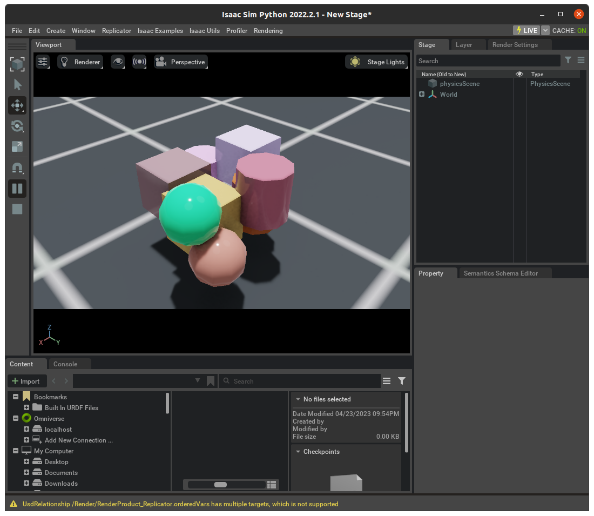

👩💻Orbit Exising Scripts
Orbit 시리즈의 두번째 포스팅으로 이번에는 Orbit에서 제공하는 scripts를 살펴보며 Orbit으로 어떤 프로그래밍을 할 수 있을지 살펴보겠습니다. 공식 Documents에서 Running existing scripts를 따라가보며 진행될 예정입니다.
1 API Demos
Orbit의 메인 기능들을 제공하는 모듈은 omni.isaac.orbit 입니다. 해당 모듈에서는 로봇들의 actuator나 object, sensor 등을 편하게 사용할 수 있는 interface를 제공하고 있습니다. 앞선 시리즈 포스팅에서 간단하게 4족 보행로봇들을 띄워보는 script를 실행 시켜보았었는데 이와 같은 standlone/demo에서 제공하는 몇가지 예제들을 실행해보겠습니다.
Orbit 시리즈 포스팅을 기반으로 이전 포스팅에 이어서 진행되는 포스팅이므로 Orbit 파일을 Github에서 다운받고 orbit 설치를 전제로 진행됩니다. 이전에 Orbit repository를 다운 받은 위치에서 진행해주세요. orbit 실행 명령어도 orbit으로 동일합니다. -p 옵션은 Isaac Sim의 python.sh를 사용하여 python 파일을 실행시키도록 하는 옵션입니다.
4족 보행 로봇들을 놓고 발(feet) marker를 시각화하고 stadning pose를 유지하도록 position command를 적용시킨 예제
orbit -p source/standalone/demo/play_quadrupeds.py
2대의 Franka 매니퓰레이터를 놓고 랜덤한 position command를 적용시켜서 움직이게 하는 예제
orbit -p source/standalone/demo/play_arms.py --robot franka_panda
128대의 Franka 매니퓰레이터를 놓고 inverse kinematics controller를 이용하여 제어하는 예제
orbit -p source/standalone/demo/play_ik_control.py --robot franka_panda --num_envs 128
카메라를 설정하고 pointcloud를 얻는 예제(cpu와 gpu 선택가능)
# CPU orbit -p source/standalone/demo/play_camera.py # GPU orbit -p source/standalone/demo/play_camera.py --gpu
2 Code 살펴보기
앞의 예제코드들 중 source/standalone/demo/play_quadrupeds.py를 하나씩 코드를 살펴보며 orbit에서 어떤 모듈들을 제공하는지 살펴보겠습니다. 해당 예제에서는 3종류의 4족 보행로봇을 불러와 진행하는데 각 로봇의 플랫폼에 대해 궁금하신 분들은 아래 링크를 눌러서 확인해보시면 됩니다.
2.1 Modules
Orbit이 기반하고 있는 Isaac Sim Simulator을 먼저 키기 위해 SimulationApp class를 이용하여 시뮬레이터 앱을 설정해줍니다. 이때 headless는 시뮬레이터의 GUI를 띄우지 않고 실행하는 옵션을 가리킵니다.
"""Launch Isaac Sim Simulator first."""
from omni.isaac.kit import SimulationApp
import argparse
# add argparse arguments
parser = argparse.ArgumentParser("Welcome to Orbit: Omniverse Robotics Environments!")
parser.add_argument("--headless", action="store_true", default=False, help="Force display off at all times.")
args_cli = parser.parse_args()
# launch omniverse app
config = {"headless": args_cli.headless}
simulation_app = SimulationApp(config)다음으로 import하는 orbit의 core모듈을 살펴보겠습니다.
prim_utils: 현재 USD stage에 prim을 생성하기 위한 모듈. (자세한 prim에 대한 내용은 다음 포스팅에서 다루도록 하겠습니다. 우선 간단하게 시뮬레이터의 오브젝트들을prim으로 본다고 생각하고 진행하겠습니다.)SimulationContext: 타임라인 관련 이벤트를 처리하고(simulator 일시 중지, 재생, 단계적 실행 또는 중지 등), stage를 구성하며(stage 단위나 상/하 방향과 같은 설정),physicsSceneprim을 생성합니다(중력 방향 및 크기, 시뮬레이션 시간 간격 크기, 고급 솔버 알고리즘 설정과 같은 물리 시뮬레이션 매개 변수를 제공). 여기서physicsSceneprim은 물리 시뮬레이션을 위한 초기화 및 설정을 담당하는 객체를 말하며,SimulationContext는 이러한physicsSceneprim을 생성하고 물리 시뮬레이션 설정을 관리하며, 타임라인 관련 이벤트 처리와 스테이지 설정을 담당합니다.set_camera_view: stage에서 카메라 prim의 위치와 대상을 설정하고, 해당 prim의 경로를 지정합니다. 여기서 카메라 prim은 stage 카메라로 사용될 객체를 의미하며, 위치(location)와 대상(target)은 각각 카메라의 위치와 카메라가 바라보는 대상의 위치를 지정하는 것을 의미합니다. 경로(path)는 스테이지에서 해당 카메라 prim을 가리키는 이름이나 경로를 의미합니다.
이외의 모듈중에서 kit_utils는 시뮬레이터에서 제공하는 ground를 불러오기 위한(create_ground_plane) 모듈이며 로봇의 발 위치 마커를 표시하기 위해 markers 모듈에서 PointMarker, StaticMarker를 불러옵니다.
다음으로 robot 모듈에서 4족보행로봇들을 위한 configuration들을 불러올 수 있습니다.
# from core
import omni.isaac.core.utils.prims as prim_utils
from omni.isaac.core.simulation_context import SimulationContext
from omni.isaac.core.utils.viewports import set_camera_view
import omni.isaac.orbit.utils.kit as kit_utils
from omni.isaac.orbit.markers import PointMarker, StaticMarker
from omni.isaac.orbit.robots.config.anymal import ANYMAL_B_CFG, ANYMAL_C_CFG
from omni.isaac.orbit.robots.config.unitree import UNITREE_A1_CFG
from omni.isaac.orbit.robots.legged_robot import LeggedRobot2.2 Helpers
Main 코드에서 시뮬레이터의 Scene을 구성하기 위해서 Ground-plane, Lights들을 편하게 구성하기 위해서 helper 함수 design_scene()를 만들어줍니다. 앞서 import했던 kit_utils를 이용해서 ground를 불러오고 prim_utils를 이용하여 빛 설정을 해줍니다.
def design_scene():
"""Add prims to the scene."""
# Ground-plane
kit_utils.create_ground_plane(
"/World/defaultGroundPlane",
static_friction=0.5,
dynamic_friction=0.5,
restitution=0.8,
improve_patch_friction=True,
)
# Lights-1
prim_utils.create_prim(
"/World/Light/GreySphere",
"SphereLight",
translation=(4.5, 3.5, 10.0),
attributes={"radius": 2.5, "intensity": 600.0, "color": (0.75, 0.75, 0.75)},
)
# Lights-2
prim_utils.create_prim(
"/World/Light/WhiteSphere",
"SphereLight",
translation=(-4.5, 3.5, 10.0),
attributes={"radius": 2.5, "intensity": 600.0, "color": (1.0, 1.0, 1.0)},
)2.3 Main
메인 코드에서는 먼저 SimulationContext를 이용하여 시뮬레이터의 시간관련 설정 등을 진행합니다. dt가 0.005라는 것은 시간 단위가 second로 시간간격이 0.005초로 설정하는 것을 말합니다. 또한 backend는 이후 포스팅에서도 설명하겠지만 물리 시뮬레이터에서 반환되는 tensor들을 어떤 backend로 캐스팅할 것인지 설정하는 부분입니다. 현재 orbit에서는 torch만 지원하고 있습니다.
시뮬레이터의 시점이 되는 카메라를 설정하고 각 로봇을 어디에 놓을지 정하는 translation 파라미터와 함께 spawning하고 마지막으로 helper 함수로 만들어주었던 design_scene()을 이용하여 ground와 light를 설정합니다.
"""Imports all legged robots supported in Orbit and applies zero actions."""
# Load kit helper
sim = SimulationContext(stage_units_in_meters=1.0, physics_dt=0.005, rendering_dt=0.005, backend="torch")
# Set main camera
set_camera_view(eye=[3.5, 3.5, 3.5], target=[0.0, 0.0, 0.0])
# Spawn things into stage
# -- anymal-b
robot_b = LeggedRobot(cfg=ANYMAL_B_CFG)
robot_b.spawn("/World/Anymal_b/Robot_1", translation=(0.0, -1.5, 0.65))
robot_b.spawn("/World/Anymal_b/Robot_2", translation=(0.0, -0.5, 0.65))
# -- anymal-c
robot_c = LeggedRobot(cfg=ANYMAL_C_CFG)
robot_c.spawn("/World/Anymal_c/Robot_1", translation=(1.5, -1.5, 0.65))
robot_c.spawn("/World/Anymal_c/Robot_2", translation=(1.5, -0.5, 0.65))
# -- unitree a1
robot_a = LeggedRobot(cfg=UNITREE_A1_CFG)
robot_a.spawn("/World/Unitree_A1/Robot_1", translation=(1.5, 0.5, 0.42))
robot_a.spawn("/World/Unitree_A1/Robot_2", translation=(1.5, 1.5, 0.42))
# design props
design_scene()시뮬레이터를 초기화하는 reset을 먼저 진행해줍니다. 각 로봇의 handle 또한 초기화를 시켜줍니다. 로봇의 각 정보를 담기 위한 buffer도 reset을 해서 본격적인 실행을 준비합니다.
# Play the simulator
sim.reset()
# Acquire handles
# Initialize handles
robot_b.initialize("/World/Anymal_b/Robot.*")
robot_c.initialize("/World/Anymal_c/Robot.*")
robot_a.initialize("/World/Unitree_A1/Robot.*")
# Reset states
robot_b.reset_buffers()
robot_c.reset_buffers()
robot_a.reset_buffers()4족 보행 로봇은 제어를 할 때 발의 움직임이 매우 중요합니다. 발의 위치에 마커를 위치시켜서 발에 대한 정보를 얻기 위해 marker를 설정해줍니다. 발의 x, y, z 축을 시각화하기 위해서 StaticMarker를 이용하여 설정하고 발이 contact 포인트를 보기 위해 PointMarker를 설정합니다.
# Debug visualization markers.
# -- feet markers
feet_markers: List[StaticMarker] = list()
feet_contact_markers: List[PointMarker] = list()
# iterate over robots
for robot_name in ["Anymal_b", "Anymal_c", "Unitree_A1"]:
# foot
marker = StaticMarker(f"/World/Visuals/{robot_name}/feet", 4 * robot_c.count, scale=(0.1, 0.1, 0.1))
feet_markers.append(marker)
# contact
marker = PointMarker(f"/World/Visuals/{robot_name}/feet_contact", 4 * robot_c.count, radius=0.035)
feet_contact_markers.append(marker)각 로봇은 action을 하게되고 이를 로봇을 제어한다고 볼 수 있습니다. get_default_dof_state()은 로봇의 각 객체에 있는 method로 각 로봇의 standing 자세에 대한 joint position(dof) 정보가 들어있습니다.
# dummy action
actions = torch.zeros(robot_a.count, robot_a.num_actions, device=robot_a.device)
# Define simulation stepping
sim_dt = sim.get_physics_dt()
sim_time = 0.0
count = 0
# Simulate physics
while simulation_app.is_running():
# If simulation is stopped, then exit.
if sim.is_stopped():
break
# If simulation is paused, then skip.
if not sim.is_playing():
sim.step(render=not args_cli.headless)
continue
# reset
if count % 1000 == 0:
# reset counters
sim_time = 0.0
count = 0
# reset dof state
for robot in [robot_a, robot_b, robot_c]:
dof_pos, dof_vel = robot.get_default_dof_state()
robot.set_dof_state(dof_pos, dof_vel)
robot.reset_buffers()
# reset command
actions = torch.zeros(robot_a.count, robot_a.num_actions, device=robot_a.device)
print(">>>>>>>> Reset!")
# apply actions
robot_b.apply_action(actions)
robot_c.apply_action(actions)
robot_a.apply_action(actions)
# perform step
sim.step()
# update sim-time
sim_time += sim_dt
count += 1시뮬레이터 초기화할 때 reset했던 buffer에 각 로봇의 정보를 담습니다. marker로 설정해두었던 foot_marker와 contact_marker도 각 로봇에서 불러와서 state update를 진행합니다.
# note: to deal with timeline events such as stopping, we need to check if the simulation is playing
if sim.is_playing():
# update buffers
robot_b.update_buffers(sim_dt)
robot_c.update_buffers(sim_dt)
robot_a.update_buffers(sim_dt)
# update marker positions
for foot_marker, contact_marker, robot in zip(
feet_markers, feet_contact_markers, [robot_b, robot_c, robot_a]
):
# feet
foot_marker.set_world_poses(
robot.data.feet_state_w[..., 0:3].view(-1, 3), robot.data.feet_state_w[..., 3:7].view(-1, 4)
)
# contact sensors
contact_marker.set_world_poses(
robot.data.feet_state_w[..., 0:3].view(-1, 3), robot.data.feet_state_w[..., 3:7].view(-1, 4)
)
contact_marker.set_status(torch.where(robot.data.feet_air_time.view(-1) > 0.0, 1, 2))3 Closing
이번 포스팅에서는 standalone example로 나와있던 play_quadrupeds.py코드의 전체적인 구성과 코드에 대해 알아보았습니다. 아직 orbit의 많은 모듈들에 익숙하지 않아 rough하게 코드의 흐름을 살펴보았지만 다음 포스팅에서는 가장 간단한 empty scene에서 시작하면서 좀 더 자세히 살펴볼 예정이니 다음 포스팅에서 좀 더 orbit과 친해져봅시다.